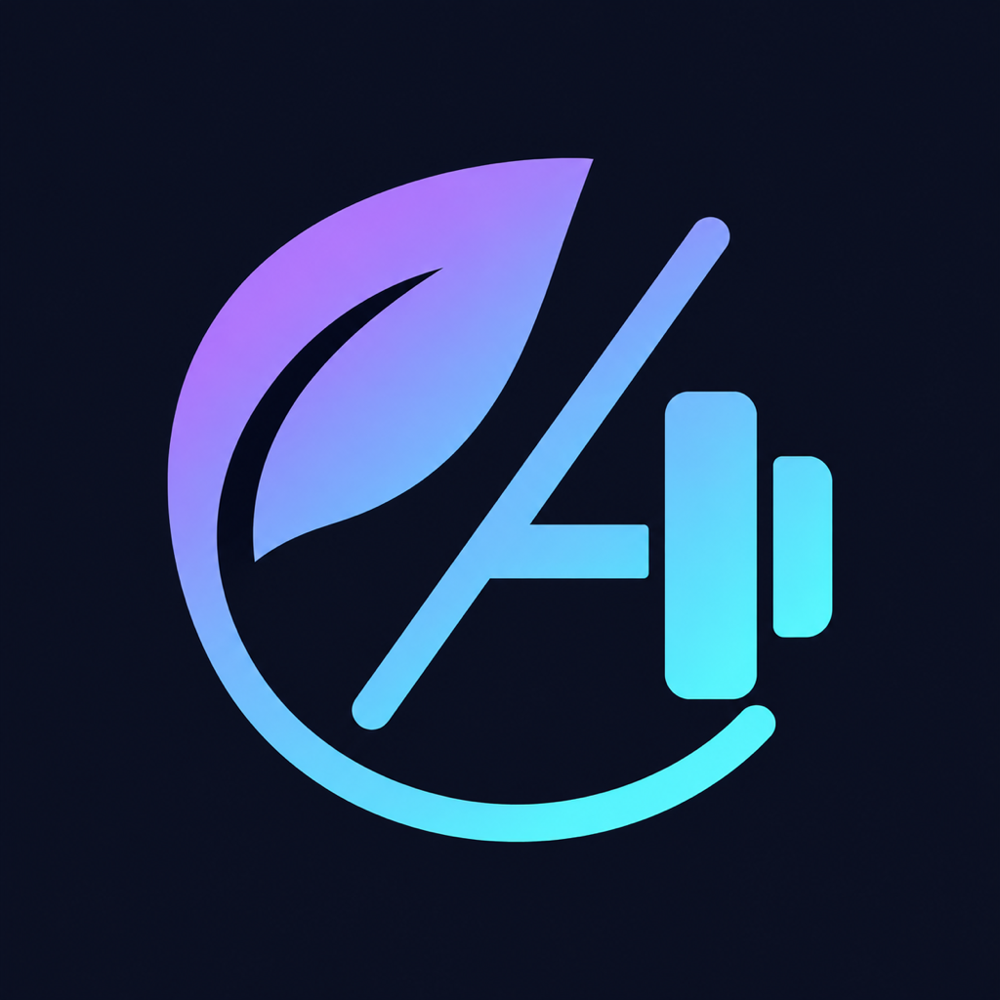

Version 1.0.0 · English (U.S.)
Ready for your listing.
12 native screenshots and copy-ready App Store text. Screens show a fictional profile and sample activity, not a user's private data.
6.9-inch iPhone
Upload in numeric order. Click an image to open the full-resolution JPEG.
13-inch iPad
Upload in numeric order. Click an image to open the full-resolution JPEG.
Copy listing text
Support/privacy URLs and your review contact still need your details. Do not publish draft placeholders.
Name
Subtitle
Promotional Text
Description
Keywords
Copyright
Review Notes
Testflight What To Test